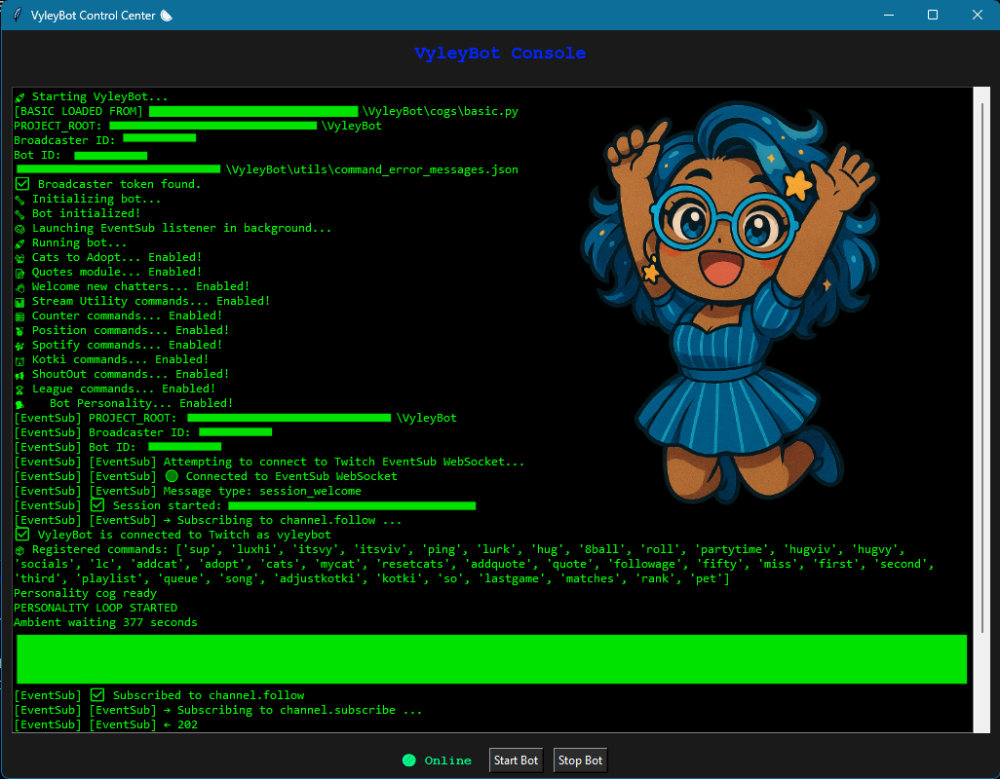
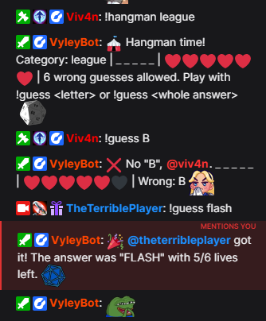
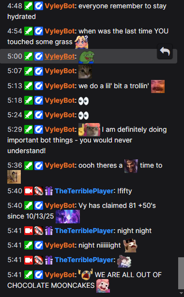
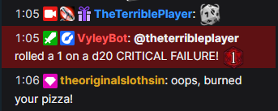

🏠 Home
VyleyBot is my custom-built Twitch companion: part chat bot, part stream utility, and part tiny digital menace.
It handles everything from chat interactions and shoutouts to Spotify controls, League of Legends stats, stream counters, and other experiments I probably decided to build instead of doing something sensible.
VyleyBot is actively developed, so commands and features may change, break, improve, or mysteriously multiply over time.
I do want to thank my lovely partner, @Viv4n for helping me here and there with my baby 🥰. You can find more info about @Viv4n here: Click ME, I'm Viv!
You can potentially find more information about me by looking through my linktree: Click ME and learn more about Vy (maybe)
Whether you made it here from a direct link on my Twitch page or not, here is a way back to my home webpage! 🖥️ Return to VeeOS Prompt
VyleyBot: Remember to stay cool, and have fun! 😸
💬 Commands
An ever growing list of some of the commands you can use in my twitch chat 📋
Shhhh... don't tell anyone but there are some secret ones too! 😉
👋 Chat & Social
VyleyBot: Greetings and salutations! Yes, I was programmed with SOOOME manners... 😜
| 📢 Command | 🤔 Description |
|---|---|
!sup |
✋ Say hi and let us know you're here. |
!luxhi @user |
👋 Give someone a greeting. |
!itsvy |
💙 Say hello to Vy (the streamer). |
!itsviv |
💜 Say hello to Viv (the mod). |
!lurk |
💤 Let chat know you're lurking. |
!hug |
🫂 Give someone a hug. |
!socials |
🔗 Grab Vy's social links. |
!followage |
⏳ See how long you've been following Vy. |
!so |
🎉 Shout out another streamer. 🧠 Experimental |
🕹️ Fun & Chaos
VyleyBot: If it feels like I don't play fair, take it up with the Streamer who built me! Or the mod that helped. 😏
| 📢 Command | 🤔 What it does |
|---|---|
!ping |
🏓 Pong. Because legally every bot requires one. |
!8ball |
🎱 Ask the mystical bot a question. |
!roll |
🎲 Roll a die from 2–20 sides. |
!quote |
💬 Pull a random quote from the collection. |
!hangman |
🅰️ Its time to guess the hidden word, just choose a category and guess away! |
🏆 Stream Shenanigans
VyleyBot: Personally, I think we should count the # of times Vy says "Fuck I missed my E!" 🤣
| 📢 Command | 🤔 What it does |
|---|---|
!miss |
💀 Log another missed cannon. |
!fifty |
🏰 Log another time the Nexus was last-hit. |
!first |
🥇 Claim first viewer. |
!second |
🥈 Claim second viewer. |
!third |
🥉 Claim third viewer. |
🎵 Spotify
VyleyBot: Vy displays the current song on her stream overlay, but it's always nice to have a cool alternative! 😎
| 📢 Command | 🤔 What it does |
|---|---|
!song |
🎧 Show the song currently playing. |
!playlist |
📻 Get the current playlist. |
!queue |
➕ Add a Spotify track to the queue. 🧠 Experimental |
🎮 League of Legends
VyleyBot: Vy usually plays League of Legends, but I heard she could be convinced to stream other games... 😏
| 📢 Command | 🤔 What it does |
|---|---|
!rank |
🏅 Check Vy's extremely |
!lastgame |
📊 View information from the previous ranked match. 🧪 In Development |
!matches |
📈 View a summary of recent ranked matches. 🧪 In Development |
🧭 Bot Utility
VyleyBot: In case you ever forget, but expect it to be weirdly out of date at all times. 🙄
| 📢 Command | 🤔 What it does |
|---|---|
!lc |
📖 Opens/lists the currently advertised commands. |
Can't find a command here?
VyleyBot has experimental and internal commands that may not be publicly documented yet.
If it isn't listed here, assume Vy is still poking it with a stick.
🔌 Features
So, what systems make VyleyBot interesting? 🤔
💬 Twitch Interaction
VyleyBot connects directly to Twitch chat and Twitch EventSub to respond to commands and stream events while the bot is running.
🎵 Spotify Integration
VyleyBot can read the currently playing track and playlist, and includes work-in-progress support for adding tracks directly to the Spotify queue.
🎮 League Integration
Riot API integration lets VyleyBot retrieve ranked League of Legends information and is being expanded with match-history features.
😺 Personality System
🧠 Experimental
VyleyBot isn't completely silent between commands. It has personality responses, greetings, occasional ambient chatter, and other small behaviors intended to make it feel like part of the stream instead of just a utility.
VyleyBot especially loves to be !pet, you should try it next stream 😸!
💰 Kotki
🧪 In Development
Kotki are VyleyBot's custom stream currency. The underlying account, balance, and transaction systems are being built out for future games and stream interactions.
🎣 Games & Experiments
🧪 In Development
Interactive chat games and other stream experiments are being developed alongside the core bot. Features may appear here before they're considered finished.
🔮 Future Features
🧪 In Development
- Discord Bot - If the next follower goal is met I will be making a discord for anyone to join, of course that means it will also have a custom bot! 😎
VyleyBot: I heard Vy and Viv might try making a version of me available for everyone... at some point 😏!
Check back soon for new features being actively developed!
🛠️ Development
Built from scratch~
One of the biggest projects I have ever done, that absolutely NO ONE asked for!

VyleyBot has its own desktop control interface for starting, stopping, and monitoring the bot.
The console displays startup diagnostics, loaded modules, Twitch authentication status, EventSub activity, registered commands, personality-system activity, and other runtime information in one place.
🖥️ Control Center
The interface gives me one place to monitor VyleyBot without digging through separate terminals or background processes.
🧱 Modular Development
Features are split into separate modules so commands, integrations, games, personality behavior, and stream utilities can be developed independently without turning the main bot into one enormous file.
🚧 Always Under Construction
VyleyBot is a personal project that I actively experiment with.
A feature being functional does not necessarily mean I consider it finished.
No release dates. No roadmap promises. Just whatever I decide to obsess over next. 😌
Gallery
More screenshots to come, STAY TUNED!
VyleyBot: Pssst... wanna be featured on this site? Come play with me on stream and you could end up on display here! 🤫
🖥️ Interfaces
💬 Live Chat
Hangman is officially available to play!
THANKS @Viv4n ✨💖

VyleyBot learned how to talk! They are a bit of a "Chatty Cathy"...
Quite the witty personality on this one! 😜

Vy rolled a Nat 1 😭

🔨 Development
✨ Milestones
❓ Help
Lets see if I can answer your question before you even ask... 🤭
⌨️ How do commands work?
VyleyBot: Looks like somebody wasn't paying attention! 🤪
Commands begin with !
Example: !song
🧪 Why didn't a command work?
VyleyBot: Have you tried... turning it off and back on again? 😜
Some features are still being developed, and commands marked In Development may change or occasionally misbehave.
🔒 Why can't I use a command?
Some commands may be restricted to moderators, the broadcaster, or specific stream situations.
🎵 Why didn't !queue work?
VyleyBot: Tsk tsk tsk, Vy is stingy and locked them behind sparkles! ✨ (channel points)
Spotify queue features may require a valid Spotify track link and are still being actively developed.
🤖 Is VyleyBot always online?
Nope! VyleyBot is a locally operated stream bot and may only be available while the stream or development environment is running.
If you are interested in participating in any of my twitch related projects currently in development, I am thinking about asking for volunteers to be my "guinea pigs"! 🐹
🐛 I broke something.
Congratulations. 🎉
Tell Vy what you typed and what VyleyBot did instead.